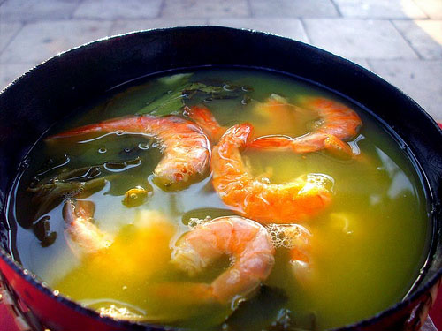

Home
Tacacá

Description
Tacacá is an iconic and vibrant street food native to the Amazonian state
of Pará. Served piping hot, this indigenous-inspired broth is less of a
standard soup and more if a unique cultural and sensory expereience.
The dish is meticulously assembled using four fundamental pillars:
Tucupi (a savory, yellow broth extracted from fermented wild
cassava), goma (a translucent, gelatinous tapioca starch), dried
salted shrimp, and jambu, the signature Amazonian herb known for
its distinct mouth-numbing properties.
Traditionally, Tacacá is served in a cuia (a hollowed-out gourd)
and consumed directly from the rim without a spoon. A small wooden stick
is provided exclusively to pick up the shrimp and jambu leaves.
This recipe offers a deep dive into the authentic flavors and traditions
of northern Brazil.
Ingredients (Yields: 6 servings)
- 4 cups water
- 1/2 cup tapioca starch (goma de mandioca)
- 1 teaspoon salt
- 500g (1.1 lbs) dried salted shrimp
- 4 leaves Amazonian chicory (culantro)
- 4 cloves garlic, thoroughly crushed
- 3 pimentas-de-cheiro (fragrant Brazilian peppers)
- 2 bunches jambu
- 2 liters tucupi
Steps
Prep Timer: 1 hour
-
In a large pot, combine the tucupi, thoroughly crushed garlic,
salt, culantro, and peppers. Bring to a boil over medium heat.
-
Once boiling, reduce the heat, cover the pot, and simmer for
approximately 30 minutes.
-
Simultaneously, in a separate pot, boil the jambu until tender.
Remove from heat, drain, and set aside.
-
Wash the salted shrimp thoroughly. In a saucepan, boil the shrimp in 4
cups of water for approximately 5 minutes. Remove the shrimp from the
pot, discard the heads, and reserve the flavorful cooking water.
-
To prepare the goma, dissolve the tapioca starch in a small
amount of cold water to prevent clumping. Gradually whisk this slurry
into the reserved shrimp cooking water. Cook over medium heat, stirring
continuously, until it thickens into a translucent, gelatinous porridge.
-
To assemble, ladle a portion of the hot tucupi into a
cuia (gourd). Add a spoonful of the goma, several
jambu leaves, and top with the prepared shrimp. Serve
immediately.